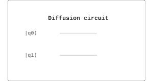

Algorithms / 算法 | 难度：中级 | 预计时间：10 分钟
扩散算子是 Grover 搜索的核心组件。
经典搜索需要 \(O(N)\) 次查询
对于大规模问题，经典方法效率低
经典算法无法利用量子并行性
扩散算子可以放大目标态的振幅
是 Grover 搜索的核心
提供二次加速
Grover 搜索
振幅放大
量子优化
from quonic.algorithms import diffusion
# 创建 2-qubit 扩散算子
result = diffusion(n_qubits=2)
print(f'Operator: {result.operator}')预期输出：
Operator: [[-0.5, 0.5, 0.5, 0.5],
[ 0.5,-0.5, 0.5, 0.5],
[ 0.5, 0.5,-0.5, 0.5],
[ 0.5, 0.5, 0.5,-0.5]]
Step 1: 均匀叠加态
均匀叠加态： \[\begin{equation} |s\rangle = H^{\otimes n}|0\rangle^{\otimes n} = \frac{1}{\sqrt{N}} \sum_{x=0}^{N-1} |x\rangle \end{equation}\]
Step 2: 扩散算子定义
扩散算子： \[\begin{equation} D = 2|s\rangle\langle s| - I \end{equation}\]
Step 3: 矩阵表示
在计算基下： \[\begin{equation} D_{ij} = \begin{cases} \frac{2}{N} - 1 & \text{if } i = j \\ \frac{2}{N} & \text{if } i \neq j \end{cases} \end{equation}\]
Step 4: 量子电路实现
扩散算子可以分解为： \[\begin{equation} D = H^{\otimes n} (2|0\rangle\langle 0| - I) H^{\otimes n} \end{equation}\]
其中： \[\begin{equation} 2|0\rangle\langle 0| - I = \text{diag}(1, -1, -1, \ldots, -1) \end{equation}\]
Step 5: 作用
扩散算子作用在量子态上： \[\begin{equation} D|\psi\rangle = 2\langle s|\psi\rangle|s\rangle - |\psi\rangle \end{equation}\]
这相当于关于平均振幅反射。
扩散算子在 Bloch 球上关于平均振幅反射。如果目标态的振幅高于平均，反射后振幅被放大；如果低于平均，振幅被减小。
在二维子空间中，扩散算子是关于 \(|s\rangle\) 的反射。
from quonic.algorithms import diffusion
# diffusion(n_qubits)
# n_qubits: 量子比特数
result = diffusion(n_qubits=2)
# result.operator: 扩散算子矩阵
# result.circuit: 量子电路
print(f'Operator shape: {result.operator.shape}')
print(f'Circuit depth: {result.circuit.depth}')from quonic.algorithms import diffusion
# 不同量子比特数
for n in [2, 3, 4, 5]:
result = diffusion(n_qubits=n)
print(f'n={n}: Operator shape {result.operator.shape}')from quonic.algorithms import diffusion
# 带噪声
result = diffusion(n_qubits=2, noise=0.05)
print(f'Operator: {result.operator}')扩散算子是 Grover 搜索的核心组件。
扩散算子用于振幅放大算法。
扩散算子可以用于量子优化算法。
关于平均振幅反射，放大目标态的振幅。
Oracle 标记目标态，扩散算子放大目标态的振幅。
\(D = 2|s\rangle\langle s| - I\)，其中 \(|s\rangle\) 是均匀叠加态。
Grover 搜索
振幅放大
量子测量
量子计数
量子优化
量子算法
from quonic.algorithms import diffusion
result = diffusion(n_qubits=2)
print(f'Operator: {result.operator}')(https://github.com/ChrisLee0721/QuoNic/blob/main/examples/diffusion/diffusion.py)